NNModelling client guide
This guide describes the Qt client controls and how they affect a project. Interface labels are shown in English as they appear on screen. Graph edits become part of the project with File > Save; resource creation and dataset metadata edits save the project when the operation completes.
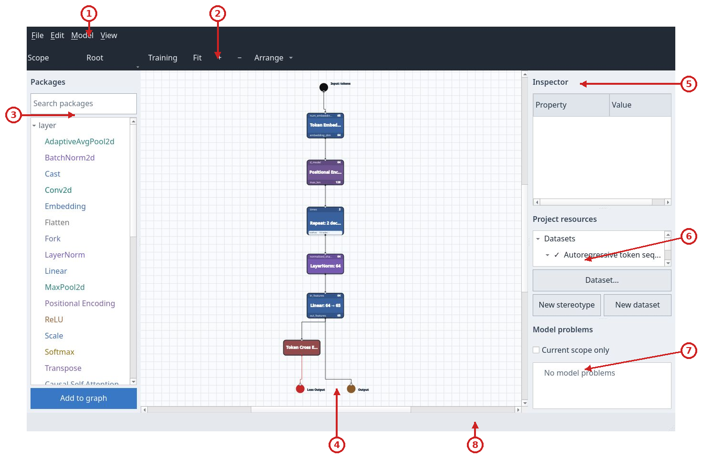
Click the image to inspect it at its original size.
- Menu bar
- Scope, training and canvas tools
- Package catalog
- Graph canvas
- Inspector
- Project resources
- Model problems
- Status area
Starting the application and projects
In a normal desktop launch, the project chooser appears first. New project creates an empty project; New MNIST MLP and New mini LLM create editable copies of the examples; Open project opens a project folder; Close closes the chooser and leaves the main window open. The main window can therefore remain open without a project. If the application starts through the automation bridge without a project path, the initial chooser is skipped. Open it with File > New project…, File > Open project… or Training. Example model copies are independent of the originals.
Creation first asks for a parent folder, then Model ID and Display name. The ID determines the new folder name. The initial model fields start at mnist-mlp / MNIST MLP or mini-llm / mini LLM; for an empty project the ID starts blank and the name suggests the entered ID. The project version is not editable in this window. An existing destination folder or invalid ID produces a message and does not replace the active project.
File contains:
| Item | Effect |
|---|---|
New project… (Ctrl+N) |
Starts an empty project. |
New from template > MNIST MLP… |
Asks for an ID and name for a copy of the MNIST classifier example. |
New from template > mini LLM… |
Asks for an ID and name for a copy of the mini LLM example. |
Open project… (Ctrl+O) |
Chooses a project folder. Before replacing unsaved edits, asks whether to save, discard or cancel. |
Save (Ctrl+S) |
Saves the current project. An error leaves the project open and displays a dialog. With no project open it shows No project is open. |
Close project (Ctrl+F4 on Linux) |
If there are edits, asks to save, discard or cancel before closing and returning to the chooser. The shortcut depends on the platform. |
Closing the main window with unsaved edits also offers Save, Discard or Cancel. Cancel leaves the project open. The window title shows * when the project has unsaved edits.
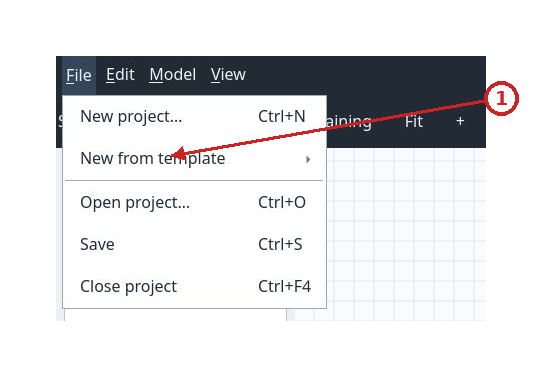
Click the image to inspect it at its original size.
- Create, open, save and close the project
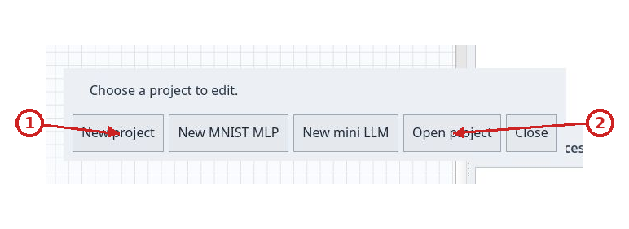
Click the image to inspect it at its original size.
- Create a new project
- Open an existing project
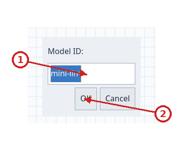
Click the image to inspect it at its original size.
- Project ID
- Confirm
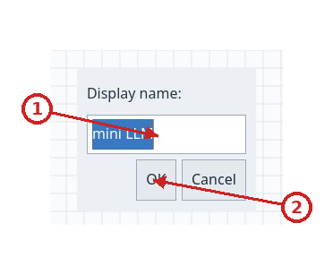
Click the image to inspect it at its original size.
- Display name
- Confirm
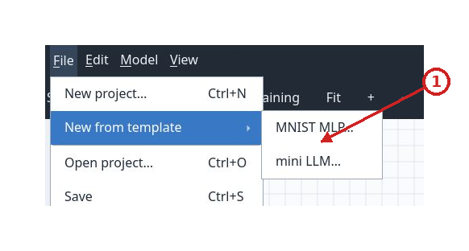
Click the image to inspect it at its original size.
- Available templates
Menus and history
Edit contains Undo (Ctrl+Z) and Redo (Ctrl+Y on the observed platform). Each item is enabled only when the project history has an action to undo or redo. Undo and redo refresh the canvas, selection, Inspector and problems. Saving and history are separate: the title loses its asterisk when the project returns to the saved revision.
Model contains Create stereotype…, Create dataset…, Manage datasets… and Training backend…. The first three require a project; without one, the client suggests opening one. Training backend… opens the panel even without a project, so you can check the service and inspect jobs.
View contains Fit graph (Ctrl+0), Zoom in (Ctrl++ on the observed platform), Zoom out (Ctrl+-) and Arrange > Vertical/Horizontal. Fit graph frames the current scope and its connections without moving nodes. Wheel zoom is centered on the pointer; menu and toolbar zoom scales around the canvas center. The mouse wheel zooms in or out. The middle mouse button, or holding Space while dragging with the left button, pans the canvas. Escape cancels a pending connection or drag. Zoom shortcuts can vary by platform and keyboard layout.
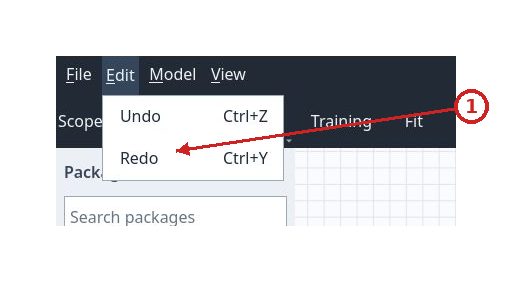
Click the image to inspect it at its original size.
- Undo and redo
Click the image to inspect it at its original size.
- Actions for stereotypes, datasets and training
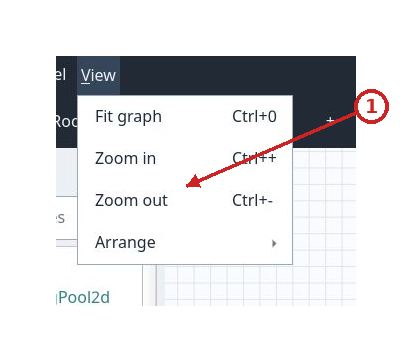
Click the image to inspect it at its original size.
- Fit and zoom commands
Graph workspace
The main window has three columns: the Packages palette on the left, the graph in the center and the Inspector, Project resources and Model problems panels on the right. Drag the dividers between columns and right-side panels to change their widths.
Palette and node creation
Search packages filters active packages by name, ID, version and kind; the search is case-insensitive. Results are grouped under kind headings (input, layer, join, loss, output, loss-output, subflow or another available category). Selecting a leaf item selects it in the palette; double-clicking it or pressing Add to graph adds it to the current scope, centered in the view. Selecting a group heading does not add a node. An item uses its package color. With no project open the palette is empty; an empty new project still has the core catalog and displays its packages.
Click nodes to select them; drag across empty space to select multiple items. Qt selection modifiers add to or remove from the selection. Drag a node to move it; to move several together, select them and drag one. Positions snap to the grid. Select an edge and press Delete or Backspace to remove it; those keys also remove selected nodes and their incident edges. A subflow with children cannot be deleted until its contents have been removed. Each rejected operation displays a dialog explaining why.
To connect two nodes, drag from an output handle to the desired input handle. The dashed connection is a draft; the model accepts it only when direction, handles, scope and occupancy/cycle rules are valid. A rejected connection shows Operation rejected and leaves the graph unchanged. Permanent edges use orthogonal routes. Color distinguishes normal output flow from loss flow. Output-handle tooltips show the ID and kind.
Input, Output and Loss Output nodes are terminal circles with an outside label. An Output collects a prediction; a Loss Output collects a loss result; each accepts one connection. A complete root model expects an Output and a Loss Output; an incomplete project remains editable and can be saved. A join node appears as a junction bar. + beside the bar adds a free input handle; − removes the highest free handle. At least two inputs and every connected handle remain visible. − is disabled if it would remove an occupied input; + is disabled at the limit of 128 displayed inputs.
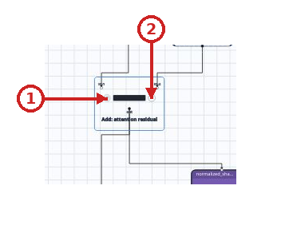
Click the image to inspect it at its original size.
- Remove an input slot
- Add an input slot
Click the image to inspect it at its original size.
- Remove an input slot
- Add an input slot
Scopes and subflows
The Scope bar opens the scope tree. Root shows the main nodes; choose a subflow to show its immediate scope. Orphan scopes collects imported scopes without a reachable container; these remain selectable. Navigation shows one scope at a time and does not move or change nodes.
A subflow has a card with its child count. Click the Subflow · N nodes › footer to expand a read-only preview on the canvas; ▾ closes it. You can hover over nodes in the preview but cannot select, move or connect them or change join inputs. Double-click the subflow, or choose Enter subflow from its right-click context menu, to enter its scope. The same menu has Expand preview / Collapse preview. Use the scope tree's navigation arrow to return to Root or an ancestor scope. Expansion is a temporary view; child nodes retain their coordinates in their scope.
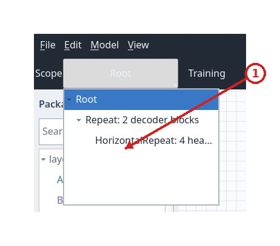
Click the image to inspect it at its original size.
- Root and nested scopes
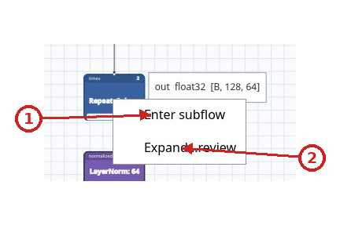
Click the image to inspect it at its original size.
- Enter the subflow
- Expand and inspect
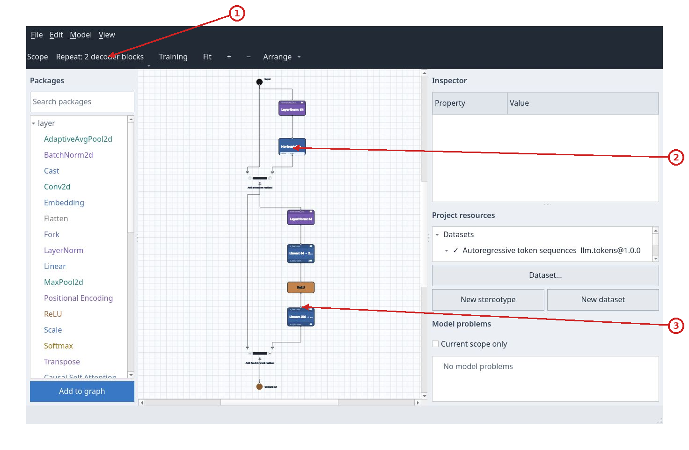
Click the image to inspect it at its original size.
- Current nested scope
- Repeated subflow block
- Projection and activation layers
Graph toolbar and direction
The Workspace toolbar provides Scope, Training, Fit, +, − and Arrange. Training opens the same panel as Model > Training backend…. Fit frames the content; + and − zoom in or out. Arrange applies the default vertical layout. Its arrow offers Vertical or Horizontal; the same choices are under View > Arrange. Arrangement recalculates node positions in the current scope, updates the in-memory project and marks it modified, then fits the result. Use File > Save to persist it to disk. Vertical flow goes from top to bottom; horizontal flow goes to the left. Changing direction is a session presentation choice; Arrange is the action that lays out and records positions.
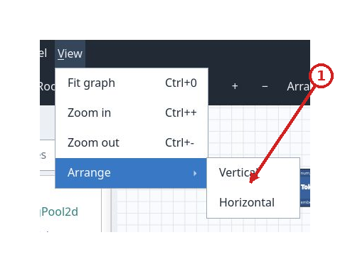
Click the image to inspect it at its original size.
- Vertical and horizontal layout
Inspector
Selecting a canvas node fills the Inspector table with Property and Value columns. With no selection, the panel is empty. Name is editable; press Enter or leave the field to apply a new name. Package shows id@version; hover over the row to see the package description.
When analysis succeeds, Successful outputs lists each handle with its kind, dtype and shape. Terminals instead show Consumed tensor with the received tensor's dtype and shape. These values describe shape analysis; they do not mean that the model has been trained.
For an Output or Loss Output inside a subflow, Boundary mapping associates the terminal with an output declared by the container. The list includes only outputs of the same kind; (unmapped) appears when there is no association. An imported association that no longer matches appears as Invalid mapping: … so you can correct it.
Parameters contains one control for each parameter defined by the package:
- parameters with preset choices use drop-down menus;
- Boolean values use checkboxes;
- integers, numbers, strings, dtypes and JSON values use text fields, validated by the package when you confirm the field;
- parameters placed at
toporbottomcan also appear as synthetic rows on the node card.
For the meaning, defaults, limits and choices of every field in distributed packages, see the parameter catalog.
A stereotype parameter consists of a package selector and fields from that package's schema. The selector shows the name and exact id@version identity, applies any kind filter, and uses (choose package) when no package is selected. Choosing a package initializes its parameters to their defaults; an existing reference keeps its values. Inner fields use checkboxes, menus or text according to their type. The project validates the selection and every changed field. If a value is invalid, the client reports the rejection and keeps the last confirmed values. Inspector data refreshes after an edit.
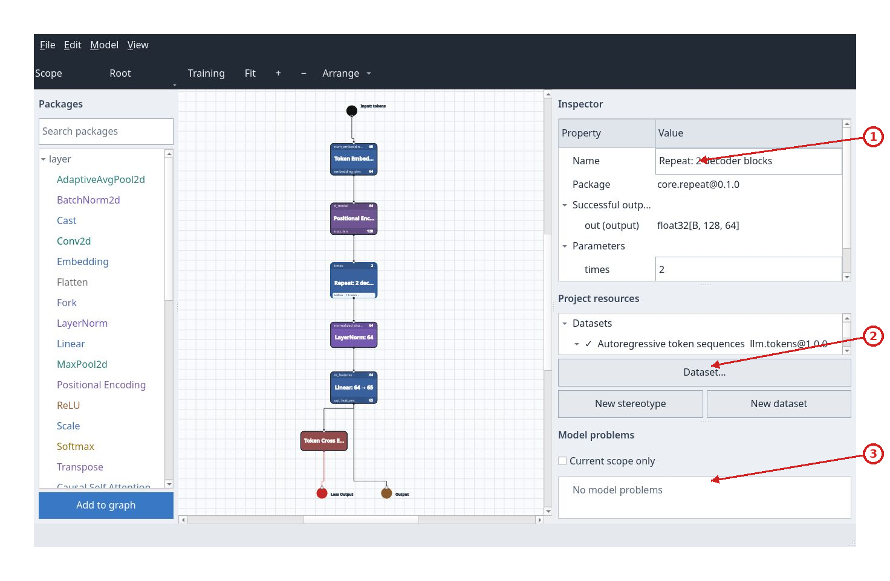
Click the image to inspect it at its original size.
- Properties of the selected object
- Project resources and dataset actions
- Model problems
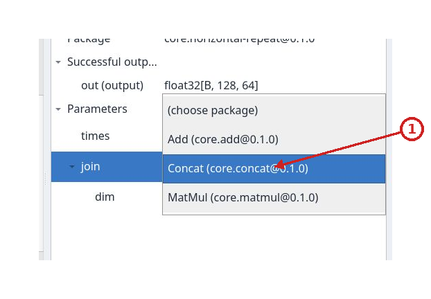
Click the image to inspect it at its original size.
- Available packages
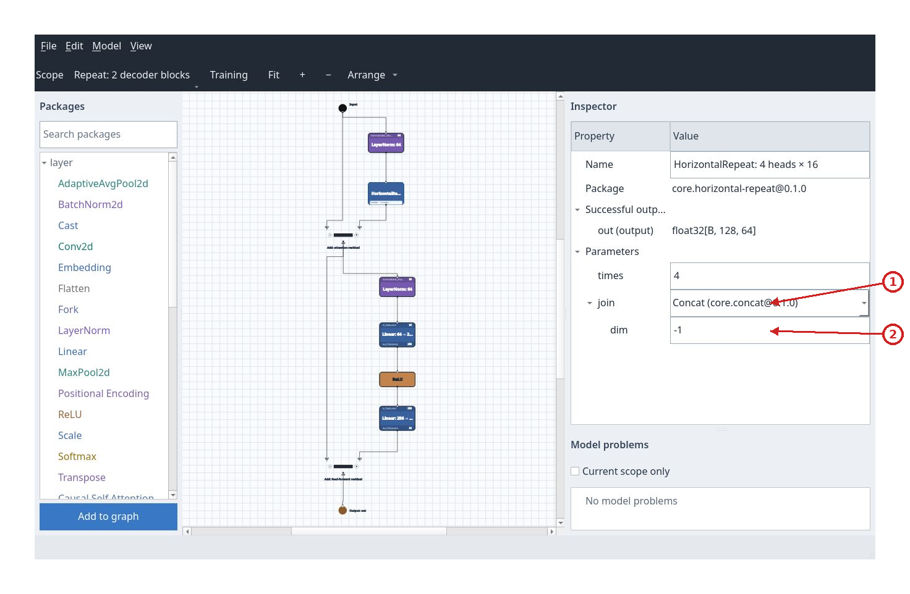
Click the image to inspect it at its original size.
- Referenced package
- Reference parameters
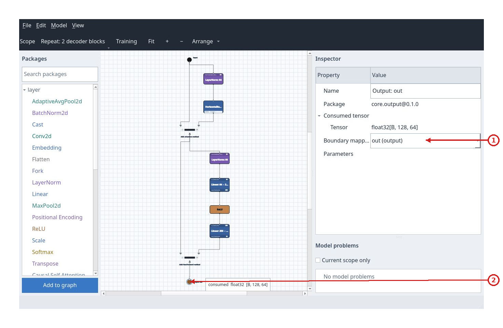
Click the image to inspect it at its original size.
- Boundary mapping selector
- Selected output boundary
Project resources and dataset selection
Project resources displays three expandable groups:
Datasetslists names andid@version. A✓marks the active dataset. Child rows showInput: name [dtype]andTarget: name [dtype]. Selecting a dataset row makes it active, refreshes analysis and marks the project modified. Clicking an informational child row displays the resource path in the status bar.Packageslists active packages with their exact identities. Expand a package to see dependencies in the formatRequires id version-constraint. These rows are informational; they do not activate or deactivate resources.Operationslists public methods that will be included in the wheel, with endpoint status. Each row's tooltip shows its nodes and codecs. Invalid endpoints remain editable in the manager and prevent training submission until fixed or removed.
New stereotype opens the stereotype creator; New dataset opens the dataset creator; Dataset… opens the dataset manager. Model > Manage operations… opens the operations manager.
Manage exported operations
Model > Manage operations… opens Manage operations, the list of methods that will appear on the Python wheel. New… creates a method; Edit… changes the selected row; Remove deletes it. The list shows the name, endpoint status, and input and output nodes. The Operation form shows the current signature from graph analysis; it is informational because the Qt client does not execute Python operators.
The Operation form asks for Method name, input and output endpoints, a codec for each side, and Current signature. Names must be simple Python identifiers such as encode or decode. An input can use the output of a root Input node, or a root node's input handle; in the second case, the supplied tensor replaces the value from the existing connection for this operation without changing the saved graph. The output selects an existing output handle. The dataset codec calls the active adapter's tokenize or untokenize; tensor accepts or returns a batched PyTorch tensor.
Operations are saved in model.json with the project. Graph edits can make an endpoint invalid; Operations marks it so you can fix or remove the method. Save project and submit blocks submission while invalid references remain. After training, the wheel exposes each name as a method such as model.encode(value) or model.decode(tensor). model.infer(value) remains available. The VAE tutorial shows how to create both methods in the MNIST example.

Click the image to inspect it at its original size.
Dataset manager
Dataset… / Manage datasets… opens Project datasets, a single-selection list. Each row shows id@version — name; the active dataset is marked ✓ (active). New dataset opens a blank form. Edit opens the selected dataset; double-clicking a row also runs Edit. Select activates the selected dataset and is disabled if it is already active. Edit and Select are disabled when no row is selected. Close closes the manager without further changes.
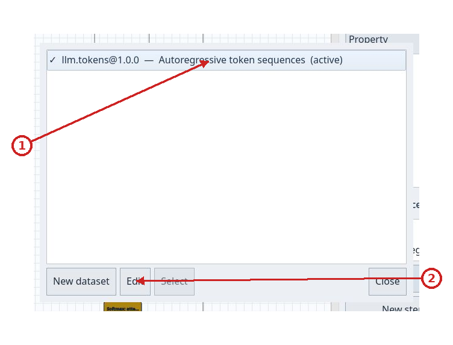
Click the image to inspect it at its original size.
- Active dataset
- Edit the selected dataset
Create or edit a dataset
Create dataset — saves project contains ID, Version, Name, Description and the initially checked Select this dataset after creation box. The edit form is titled Edit dataset — saves project: ID and Version are locked and the selection box is not shown.
The Input slots and Target slots tables have Slot name, Dtype and Shape columns. For each row, enter a unique name, a dtype from float16, bfloat16, float32, float64, int8, int16, int32, int64, uint8, bool, and comma-separated dimensions. The symbolic dimension B represents the batch; other dimensions must be positive integers. A shape can have 1 to 64 dimensions. Each new row starts with dtype float32 and shape B. Add row adds a row; Remove row removes only the selected row. At least one input slot is required; target slots may be empty.
Create and save project creates the resource and saves the project; in edit mode the button is Save changes. Cancel closes without applying the fields. Errors appear in the form, which remains open so you can correct them. Editing a dataset changes only the displayed name, description and slots; it preserves the ID/version, Python adapter, data and metadata not shown in the form.
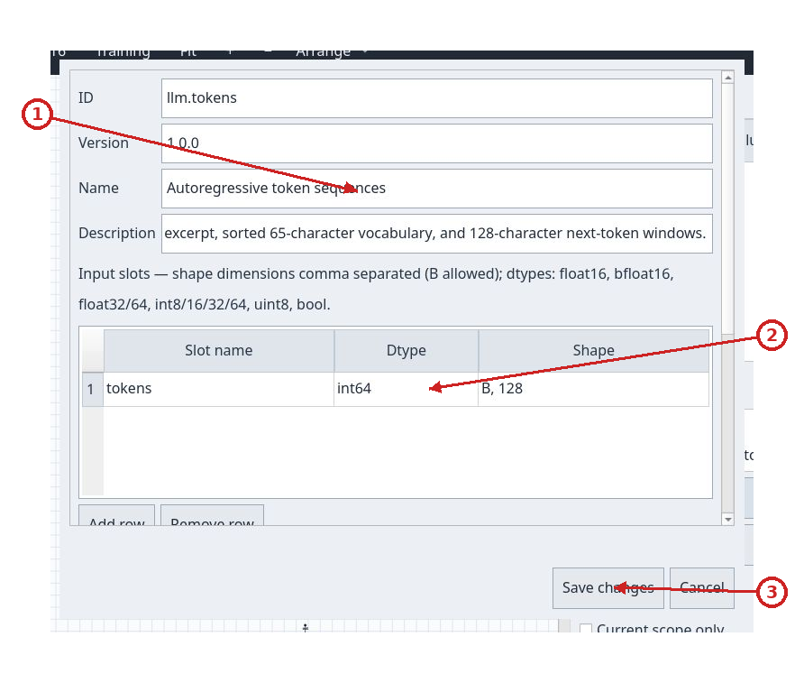
Click the image to inspect it at its original size.
- Dataset ID, version, name and description
- Input slot name, dtype and shape
- Save changes or cancel
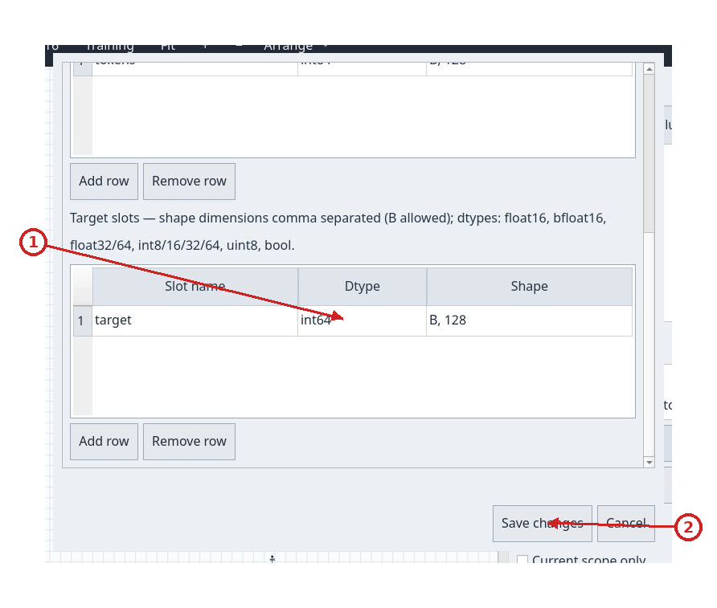
Click the image to inspect it at its original size.
- Target slot name, dtype and shape
- Save changes or cancel
Create a stereotype
Create stereotype — saves project opens from Model > Create stereotype… or New stereotype. Its initial fields are ID, Version (default 1.0.0), Name, Description, Kind and Color (default #6b8fc4). Kind offers input, layer, join, loss, output, loss-output and subflow.
The metadata fields have distinct meanings in both the stereotype and dataset forms:
| Field | Description |
|---|---|
ID |
Technical resource identity. Project references use it with the version. It must follow the syntax accepted by the creator. |
Version |
Resource version; distinguishes definitions that share an ID. |
Name |
Readable name shown in catalogs and lists. |
Description |
Text describing the resource's purpose and use. |
Kind |
Node role in the graph; determines its display and connection rules. |
Color |
Color of the palette item and card; use a hexadecimal value such as #6b8fc4. |
Kind choice |
Use |
|---|---|
input |
Source of a scope's input tensors. |
layer |
Tensor transformation, such as a neural layer. |
join |
Combines multiple inputs; the canvas provides dynamic handles. |
loss |
Computes an objective exposed as a loss output. |
output |
Terminal that consumes a prediction. |
loss-output |
Terminal that consumes a loss objective. |
subflow |
Container for a navigable inner graph. |
Use explicit output handles instead of defaults enables the Output ID / Type (output or loss) table. Add output row creates a row (initial type output); Remove output row removes the selected row. Explicit definitions replace implicit outputs. Without an override, the caption shows the defaults: a normal out of kind output, a loss handle of kind loss for kind loss, and no outputs for output and loss-output. At most one output of each kind is allowed. IDs must be nonempty and unique; terminal nodes cannot declare outputs.
Key is the technical parameter name shown in the Inspector; Default is the initial value for new nodes; Minimum sets the lower bound for numeric values. Minimum is supported only for integer and number, must be finite, and cannot exceed the default. Integer values cannot have a fractional part. Type determines the control and validation, while Choices is supported only for string and dtype; when choices are supplied, the default must be one of them.
Parameters is a table with Key, Type, Default, Minimum, Choices (comma separated), Position and an untitled column. Types are boolean, integer, number, string, dtype and JSON arrays. The default must match the type; Minimum must be finite. Choices are comma-separated values and produce a menu in the node Inspector. Position may be empty, top or bottom; the latter two show the key and value on the node card. Add parameter row adds a row with initial type number and value 0; Remove selected row removes the selected row. The untitled final column is ignored. Use the horizontal scrollbar to reach it; it is not an additional setting.
Dependencies contains Package ID and Version constraint. The package ID identifies the required resource; the constraint selects compatible versions, for example 0.1.0 or ^0.1.0. Add dependency adds a row with initial constraint 0.1.0; Remove dependency removes the selected row. IDs and constraints must be nonempty, and IDs must be unique. The project must be able to resolve every dependency.
Optional Lua inference contains the source editor. Its initial text is an explicit pass-through rule: it returns the first input and reports when one is missing. Replace it with a valid Lua rule; the client shows errors beside the editor and highlights a line when available. Create and save project validates and saves the stereotype and project; Cancel cancels the form. A field or Lua error leaves the entered values open for correction.
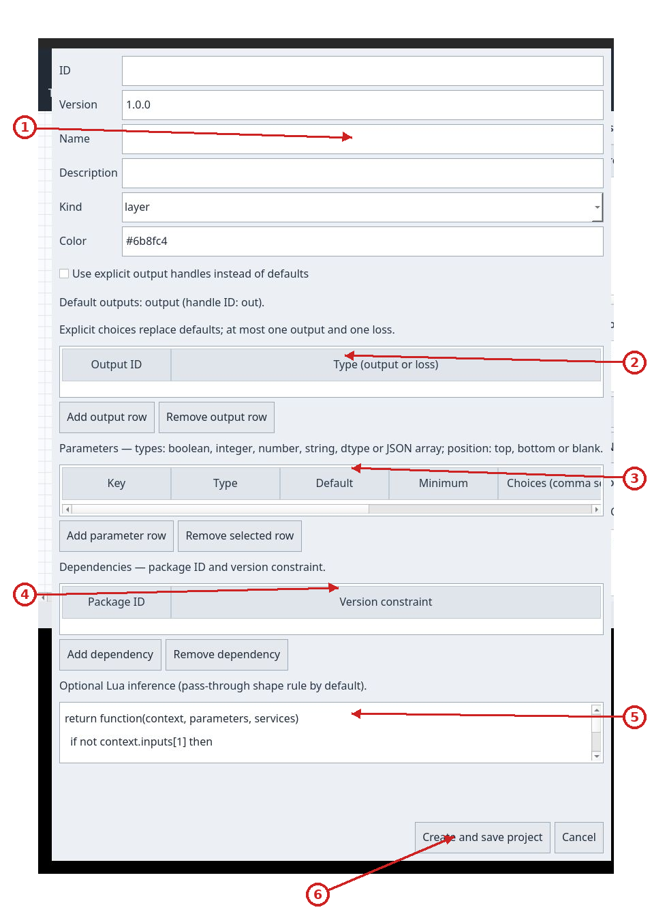
Click the image to inspect it at its original size.
- ID, version, name, description and kind
- Explicit output handles
- Parameter schema
- Package dependencies
- Optional Lua function
- Create and save project
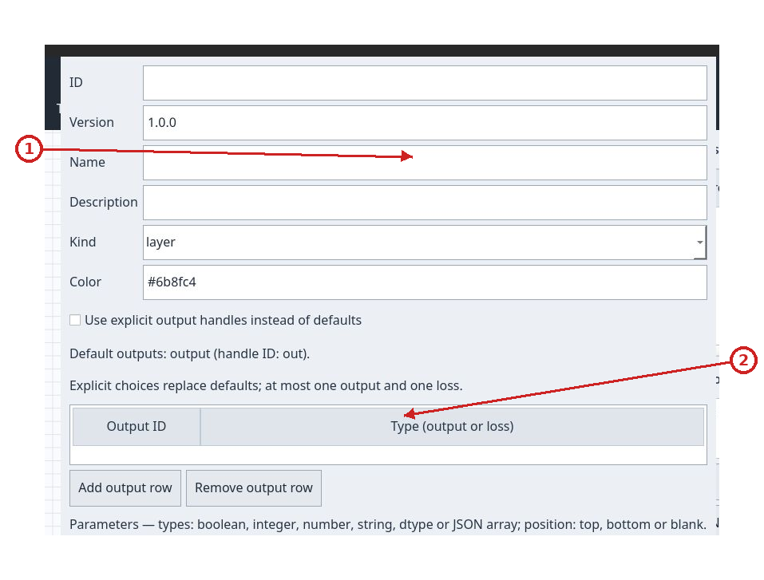
Click the image to inspect it at its original size.
- ID, version, name and description
- Kind, color and outputs
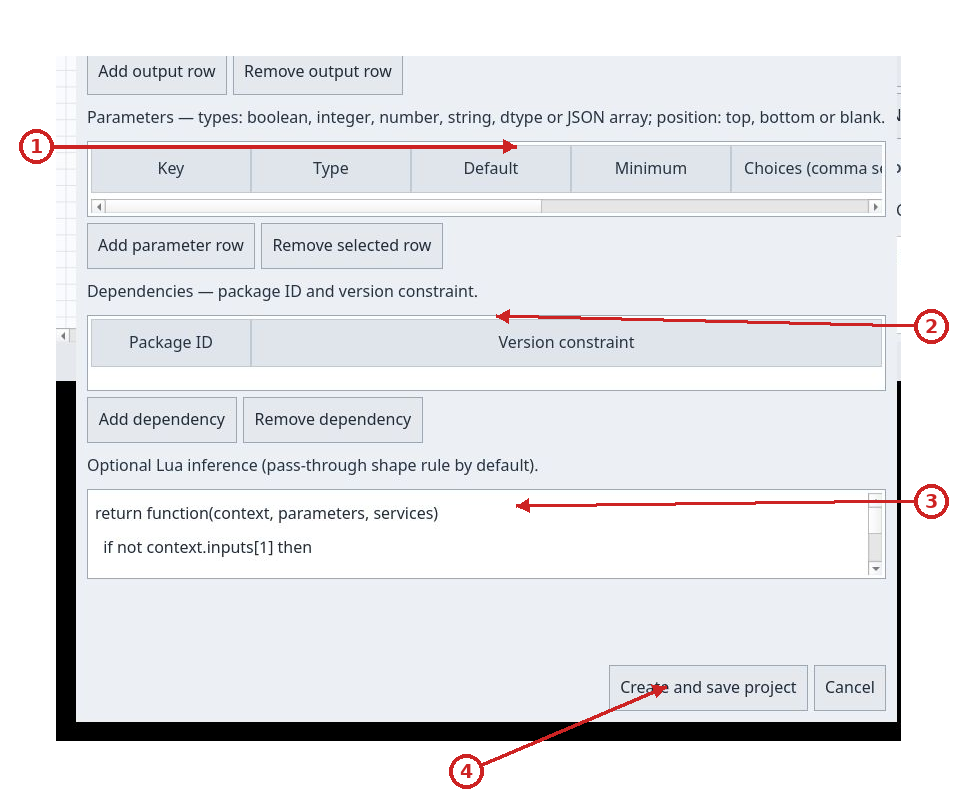
Click the image to inspect it at its original size.
- Parameter schema
- Package dependencies
- Optional Lua function
- Create and save project
Model problems
Model problems lists shape-analysis problems; it does not list successful rows. Each row shows category, node name, scope and reason. Categories distinguish Lua compilation error, Model error, Incomplete and Analysis unavailable by icon, text and color. Primary causes are grouped; blocked descendants appear as expandable child rows. When available, Technical details opens stable codes, source file/line or technical details.
Current scope only filters the list to the displayed scope and keeps an outside cause visible as context when needed. Clicking a navigable problem selects and centers its node, switching to its scope. The Root problem reports missing or invalid root terminals and does not navigate to a node. If analysis failed, Analysis unavailable remains visible with expandable technical details; the model is not presented as problem-free. Nodes with problems also show a small canvas marker.
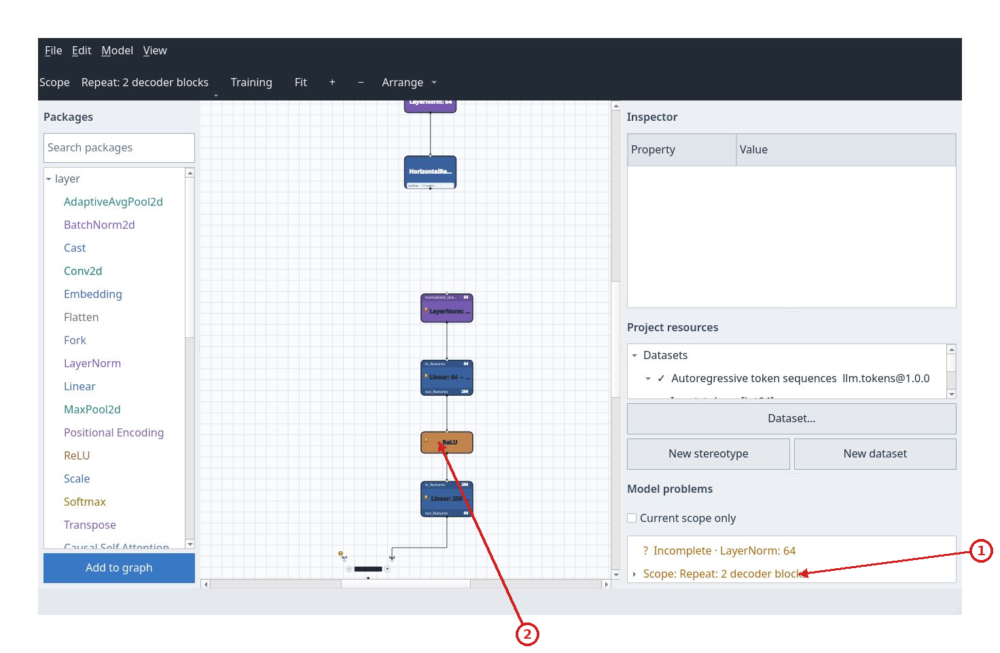
Click the image to inspect it at its original size.
- Problem list
- Affected graph nodes
Training backend
Training on the toolbar and Model > Training backend… open Training backend. You can connect and inspect jobs without a project; submitting a job requires a valid project, which is saved before submission.
At the top, Endpoint starts at http://127.0.0.1:8765. Bearer token is optional, hidden as you type and kept in memory for the session. Connect / check health checks the service and container runtime; Refresh jobs updates history. The status line reports the result in readable form.
Submission fields are Epochs (10), Batch (32), Learning rate (0.001), Seed (0) and Publish every N steps (10). Epochs: 1–10000; batch: 1–4096; learning rate: greater than zero and at most 1; seed: −2147483648 to 4294967295; publish interval: 1–100000. The interval controls metric publication and validation. Save project and submit saves the current state first, then submits an immutable snapshot; a save or submission error appears in the status line.
Job history shows abbreviated date/time, ID suffix and status; its tooltip shows the full ID and date. Selecting a job loads its details and curves. The list refreshes every 2.5 seconds. Learning curves displays Training loss and Validation loss, both enabled initially, on the same loss axis. Scale chooses Linear or Log. The horizontal axis is Optimizer step for new published points and Epoch for historical metrics that have no step points. Final test loss remains pending until the job finishes with a valid value.
Training and worker log reports status, any error, metrics and final test loss. The bottom controls are Download weights, Download wheel, Restore snapshot…, Cancel job and Close. Downloads require a completed job and save the selected file through the system dialog. Restore snapshot… recreates a copy in a new folder chosen by the user, opens it as a project and does not overwrite an existing folder. Cancel job requests cancellation of the selected job. Close closes the panel.
New wheels use distribution nnm_<normalized-project-id>; for example, project
ID llm produces nnm_llm-0.1.0-py3-none-any.whl. The Python module inside the
wheel remains job-specific (nnmodel_<normalized-job-id>): read the module name
from the wheel for the import instead of deriving it from the filename. Jobs
from projects with the same normalized ID share a distribution name and
version; install their wheels in separate Python environments. Previously
stored wheels keep their original names and contents.
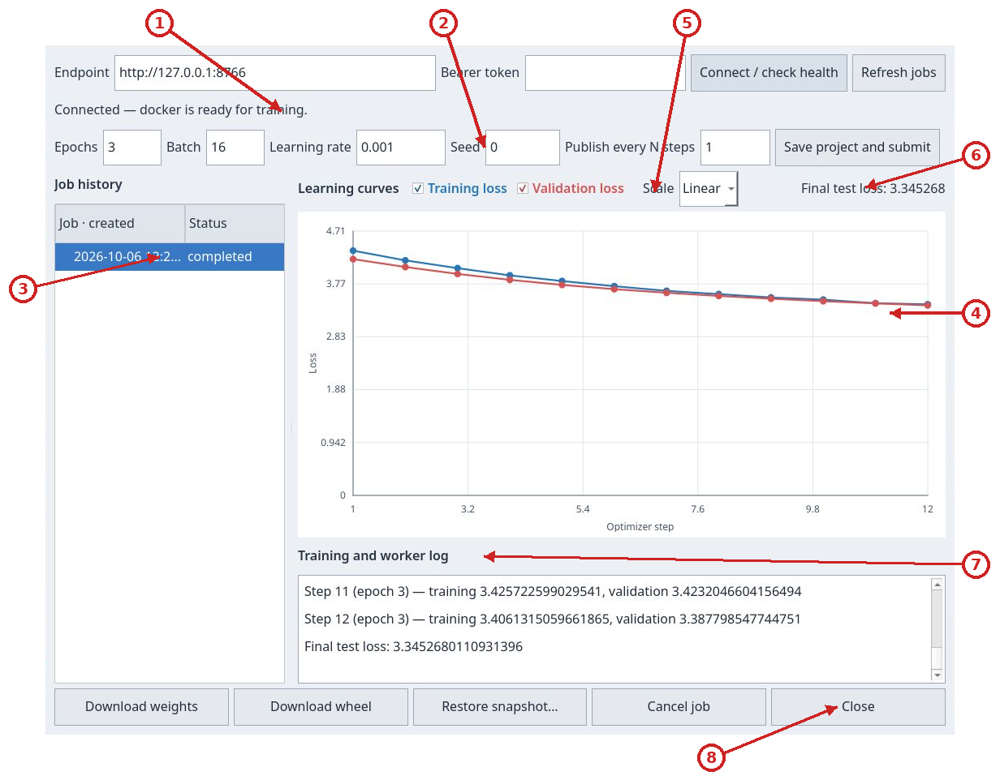
Click the image to inspect it at its original size.
- Backend connection
- Training configuration
- Job history and status
- Training and validation loss curves
- Curve visibility and scale
- Final test loss
- Training and worker log
- Download, restore, cancel and close actions
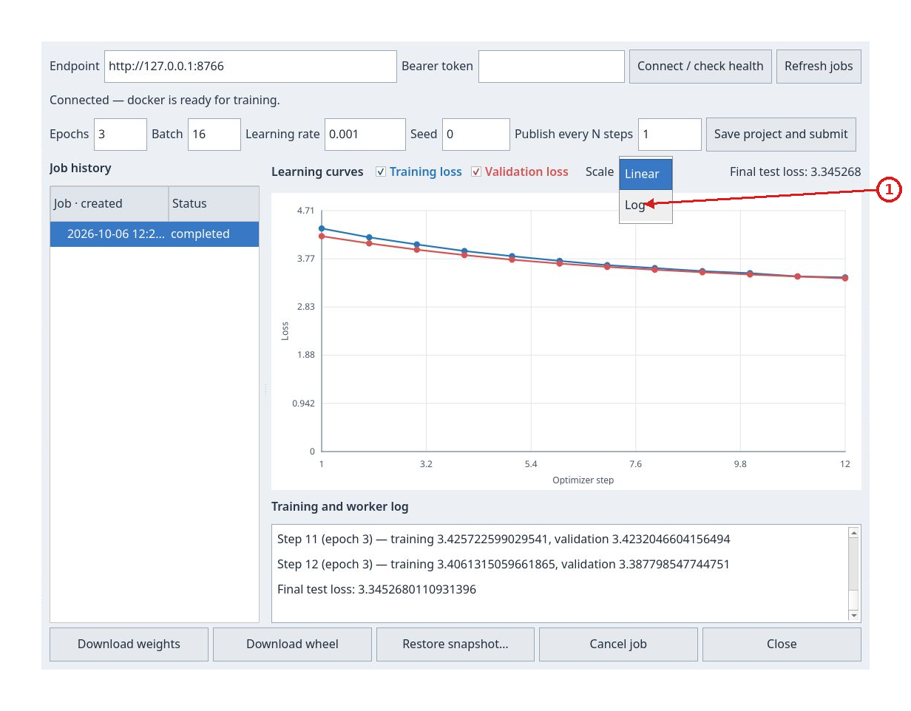
Click the image to inspect it at its original size.
- Linear or logarithmic curve scale
Features not exposed in the current interface
The project describes a Network 3D explorer, but the current Qt window has no 3D tab, menu or command. Therefore its flight, display, occurrence selection, Fit and 3D Home controls are unavailable in this version. The 2D canvas is the only graph editor exposed.